Case Studies
PROOF, NOT PROMISES.
01 MOORR
Moorr is a personal finance and property wealth platform that helps users manage their financial position, property portfolio, cashflow, and long-term goals. The platform combines financial data, projections, and planning tools into one experience.

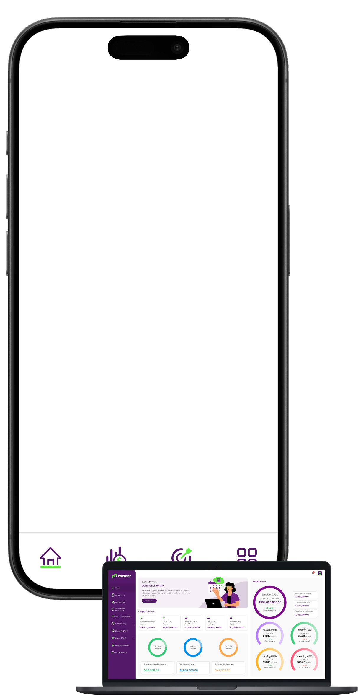

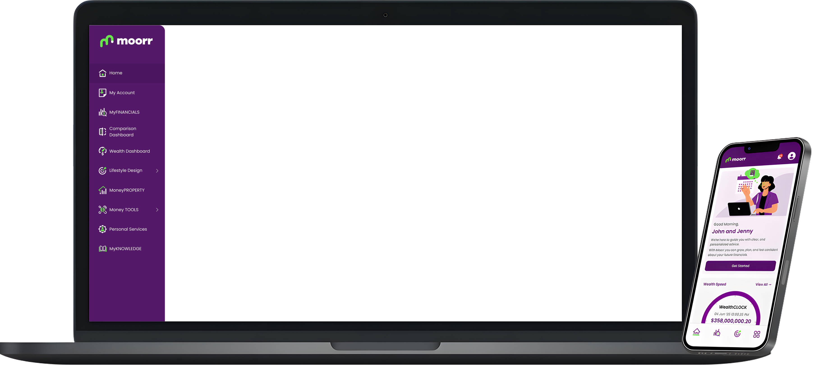
MY ROLE
UI/UX Designer
- Designed end-to-end experiences
- Built reusable design system
- Created web and mobile UI
- Supported developer hand-off
- Reviewed developer design output
CHALLENGES
Design challenges
- Complex financial information
- Multiple connected user flows
- Dense projection interfaces
- Strict business requirements
- Desktop-to-mobile adaptation
SOLUTIONS
Design approach
- Simplified financial information
- Unified connected workflows
- Clarified projection visualisations
- Followed acceptance criteria
- Optimised responsive layouts
RESULTS
Project impact
- Clearer financial experiences
- More consistent product designs
- Improved feature usability
- Smoother developer hand-off
- Stronger responsive consistency
02 MR. PLUMBER
Mr. Plumber is a plumbing service website redesign focused on making services easier to understand, strengthening customer trust, and creating clearer paths to enquiry. The new design brings services, project work, service areas, FAQs, and contact options into one more consistent experience.
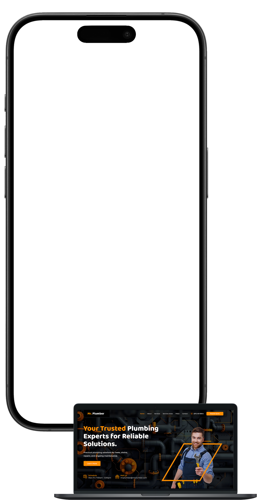
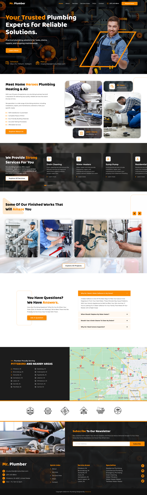
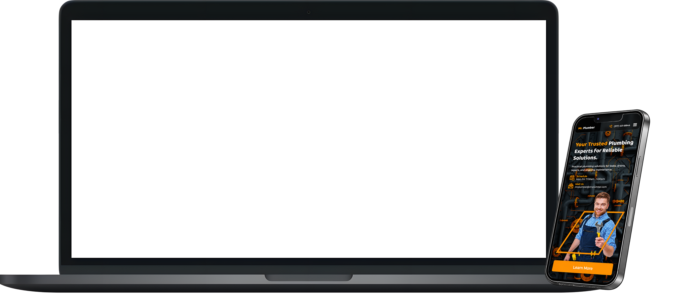
MY ROLE
UI/UX Designer
- Redesigned end-to-end website
- Defined visual hierarchy
- Built reusable UI system
- Designed responsive layouts
- Created interactive prototype
ISSUES
Website issues
- Services felt hard to scan
- Contact paths lacked prominence
- Trust signals felt scattered
- Portfolio lacked clear structure
- Local coverage felt unclear
SOLUTIONS
Design approach
- Grouped services into cards
- Prioritised quote and contact
- Consolidated trust indicators
- Structured project showcase gallery
- Added service-area map
RESULTS
Project impact
- Faster service discovery
- Clearer contact pathways
- Stronger trust presentation
- Better project visibility
- Clearer local service coverage
03 NORTHLINE PROPERTY CO.
Northline Property Co. is a conceptual Australian real estate website designed to make property discovery, suburb research, and inspection booking easier. The redesign focuses on clearer navigation, stronger trust signals, and a more premium experience across desktop and mobile.

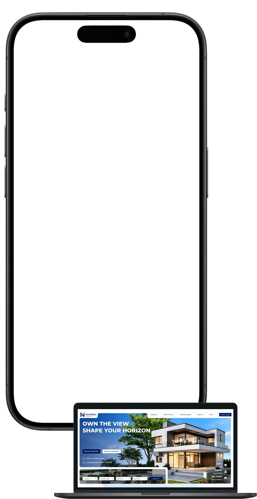
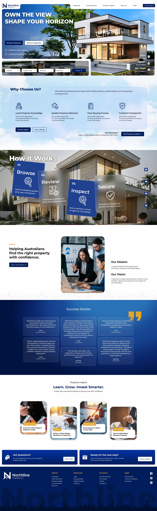
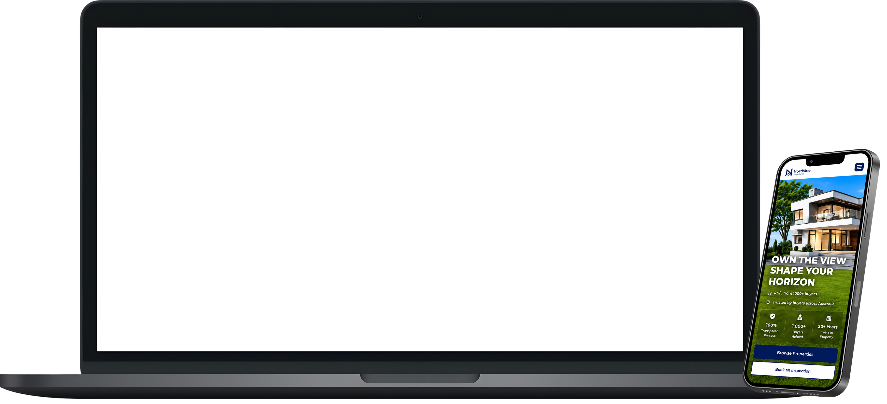
MY ROLE
UI/UX Designer
- Led end-to-end UX process
- Defined information architecture
- Created user flows
- Built reusable design system
- Designed interactive prototypes
ISSUES
Website issues
- Property discovery lacked clarity
- Navigation felt fragmented
- Suburb information felt disconnected
- Trust signals lacked prominence
- Conversion paths felt unclear
SOLUTIONS
Design approach
- Simplified property discovery
- Restructured site navigation
- Connected suburb information
- Strengthened trust-building content
- Clarified enquiry pathways
RESULTS
Project impact
- Clearer property browsing
- More intuitive navigation
- Stronger local expertise
- Better conversion visibility
- More consistent experience
04 CAFÉ AUSTRALIA
Café Australia is a website redesign focused on creating a more premium, modern, and visually engaging experience for the brand. The goal was to improve the website’s presentation, strengthen the coffee-focused identity, and make the overall browsing experience clearer and more polished.

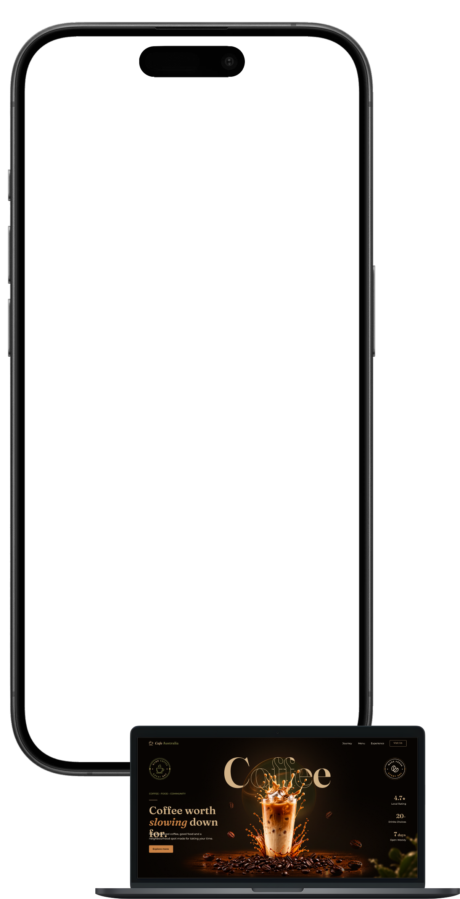
MY ROLE
UI/UX Designer
- Redesigned the website experience
- Improved structure and hierarchy
- Created a consistent UI system
- Designed responsive web layouts
- Created an animated prototype
ISSUES
Current website issues
- Outdated website presentation
- Weak visual hierarchy
- Limited premium brand feel
- Inconsistent spacing and content
- Cross-device usability issues
SOLUTIONS
Design approach
- Introduced a premium visual direction
- Improved typography and spacing
- Strengthened coffee-focused brand imagery
- Standardised components and sections
- Optimised desktop and mobile
RESULTS
Project impact
- Stronger overall brand presentation
- Clearer website experience
- More consistent visual design
- Improved readability and organisation
- Better cross-device responsiveness
05 CHARLENA SEARS, PSY.D.
Charlena Sears, Psy.D. is a therapy website redesign focused on creating a calmer, clearer, and more trustworthy digital experience. The goal was to improve how visitors understand the services, navigate the website, and feel confident taking the next step toward getting support.

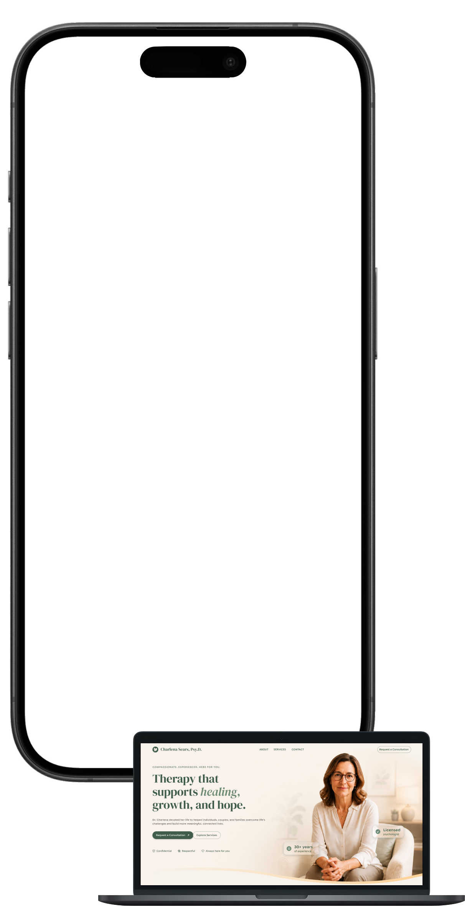
MY ROLE
UI/UX Designer
- Redesigned the website experience
- Improved structure and hierarchy
- Created a consistent UI system
- Designed responsive web layouts
- Created an interactive prototype
ISSUES
Current website issues
- Unclear content hierarchy
- Confusing user pathways
- Weak trust-building elements
- Inconsistent visual presentation
- Limited mobile usability
SOLUTIONS
Design approach
- Simplified content hierarchy
- Clarified key user journeys
- Strengthened trust-focused messaging
- Standardised visual presentation
- Improved responsive usability
RESULTS
Project impact
- Clearer content structure
- Easier website navigation
- Stronger sense of trust
- More consistent visual identity
- Better mobile experience